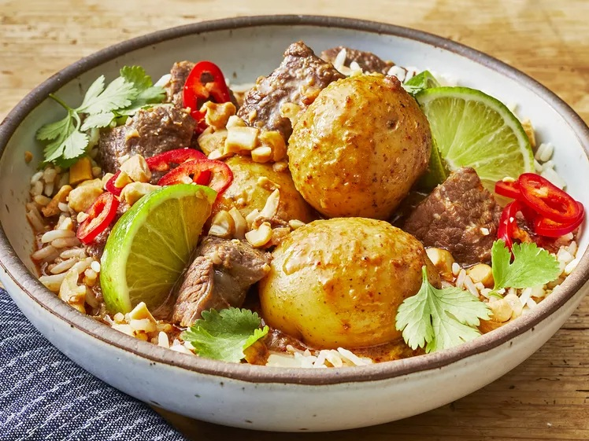

See other recipes
Massaman Curry

Description
A delicious, hearty fusion of Thai and South Asian flavours using beef and potatoes.
Ingredients
- 3 pounds boneless beef chuck roast
- 3 ½ tablespoons cornstarch, divided
- ½ teaspoon kosher salt
- ½ teaspoon ground black pepper
- 2 tablespoons canola oil
- 6 tablespoons Massaman curry paste
- 1 cup low-sodium beef broth
- 1 (13.5 ounce) can unsweetened coconut cream
- 1 pound baby Yukon Gold potatoes
- 2 tablespoons cold water
- 1 lime, zested and juiced
- 3 cups cooked jasmine rice
- ½ cup roasted cashews
- 1 cup chopped fresh cilantro leaves and stems
- 1 medium Fresno chile, thinly sliced
- additional lime wedges, for serving, if desired
Steps
- Pat beef dry with paper towels, trim, and cut into 1 1/2- to 2-inch pieces. Place in a bowl with 2 tablespoons cornstarch, salt, and pepper; toss to coat beef evenly.
- Heat oil in a large nonstick skillet over medium-high heat. Add half of the beef and cook, turning often, until beef is browned on all sides, about 6 minutes (do not overcrowd the skillet to ensure browning). Repeat process with remaining beef, using any residual oil in the skillet. (Do not wipe skillet clean.) Place browned beef in an ungreased 6-quart slow cooker.
- Once all beef has been browned, lower heat to medium and add curry paste, stirring to release any browned bits from the skillet. Add beef broth and coconut cream to skillet, stirring to combine ingredients. Pour mixture over beef in slow cooker. Add potatoes to slow cooker; cover and cook on HIGH for 4 hours, or LOW for 6 hours, or until beef is very tender when pierced with a fork.
- Remove beef and potatoes to a large bowl, and carefully pour liquid from slow cooker into a heatproof glass measuring cup or bowl and allow to stand until fat settles on top of liquid, about 2 minutes. Remove fat from the surface of the liquid with a ladle and discard.
- Pour remaining liquid into a saucepan and bring to a boil, undisturbed, over medium-high heat. Whisk remaining 1 1/2 tablespoons cornstarch with 2 tablespoons cold water together in a small bowl; add to boiling liquid in saucepan, whisking until mixture thickens, 2 to 5 minutes. Return meat and potatoes to thickened sauce; stir in lime zest and juice.
- Serve family-style, or place 1/2 cup rice into each of 6 bowls, spoon 1 1/3 cups beef, potatoes, and sauce mixture over rice, and garnish each portion with cashews, cilantro, sliced chile, and a lime wedge.